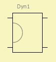

Elec-Dyn-Motor
| Home | LE-Part | Transducer Mobility | Electrical | Mechanical (mob) |
 |
 Mobility |
Parameters
| Caption | String | Name of component |
| Formula | String | Formula of parameters |
| Re | Ω | Voice coil resistance at DC. |
| BL | N/A | Force Factor of motor. |
| VC | HF voice coil parameters. |
The Elec-Dyn Motor is a transducer, which couples the electrical domain to the mechanical mobility domain. There are four poles. To the left we have two electrical terminals where the flow is the current and the potential is the voltage. The two poles at the right side belong to the mechanical mobility domain where the flow is the force and the potential is the velocity.
Details are given at
LE Electro-Dyn-Model, LE Voice Coil Parameters
Formula
The name of the parameters are equal to the formula-identifiers:
|
| ||||||||
Example
 |
This example pictures a typical model of a loudspeaker with an electro dynamic motor. It is a discrete version of component Elec Dyn Driver.
From left to right we have three domains: the electrical, the mechanical and
the acoustic domain.
In the electrical domain we have the voltage source and a generator resistance Rg.
Between the electrical and the mechanical domain there is the electric dynamic motor,
which creates a force F = BL·I due to the current I.
Here the mechanical domain is modeled with the help of the mobility analogy.
Hence on the mechanical side of the Elec Dyn Motor-component the flow is a force
and the potential is the velocity. The velocity is shared by the mass Mm1, the spring
of the suspensions Km1 and the diaphragm. Hence all these components are wired in parallel.
On the right hand side there is the acoustical domain with the radiator Rad1
and and the enclosure Encl1. The acoustic domain is using the impedance analogy for
its lumped element network. Hence here we have sound pressure as potential and
volume velocity as flow. Between the mechanical and acoustical domain there is another
transducer, the diaphragms. Because here we have mobility to the left and impedance
analogy to right we have to gyrate network parameters. This is taken care of by
component Diaphragm (mob).